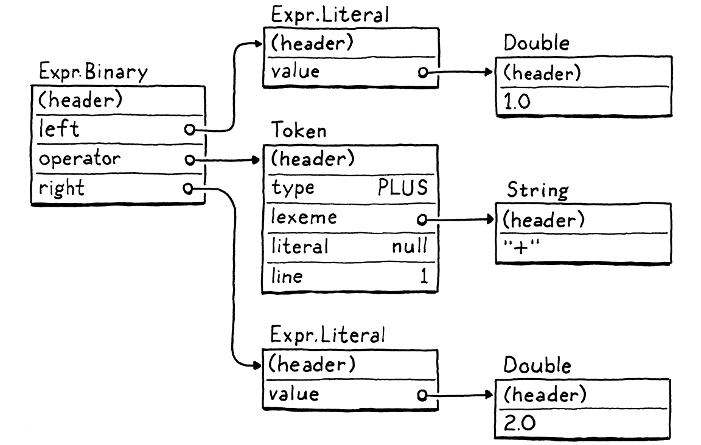

Morceaux de bytecode
Si vous trouvez que vous passez presque tout votre temps sur la théorie, commencez à tourner un peu d’attention vers les choses pratiques ; cela améliorera vos théories. Si vous trouvez que vous passez presque tout votre temps sur la pratique, commencez à tourner un peu d’attention vers les choses théoriques ; cela améliorera votre pratique.
Donald Knuth
Nous avons déjà nous-mêmes une implémentation complète de Lox avec jlox, alors pourquoi le livre n’est-il pas encore fini ? Une partie de cela est parce que jlox compte sur la JVM pour faire beaucoup de choses pour nous. Si nous voulons comprendre comment un interpréteur fonctionne tout le chemin vers le bas jusqu’au métal, nous devons construire ces pièces et morceaux nous-mêmes.
Une raison encore plus fondamentale que jlox n’est pas suffisant est qu’il est bon sang de trop lent. Un interpréteur à parcours d’arbre est bien pour certaines sortes de langages déclaratifs de haut niveau. Mais pour un langage impératif à usage général—même un langage de “script” comme Lox—cela ne volera pas. Prenez ce petit script :
fun fib(n) { if (n < 2) return n; return fib(n - 1) + fib(n - 2); } var before = clock(); print fib(40); var after = clock(); print after - before;
Sur mon portable, cela prend à jlox environ 72 secondes pour s’exécuter. Un programme C équivalent finit en une demi-seconde. Notre langage de script typé dynamiquement ne va jamais être aussi rapide qu’un langage typé statiquement avec gestion manuelle de la mémoire, mais nous n’avons pas besoin de nous contenter de plus de deux ordres de grandeur plus lent.
Nous pourrions prendre jlox et le lancer dans un profileur et commencer à régler et ajuster les points chauds, mais cela ne nous mènera que jusque-là. Le modèle d’exécution—parcourir l’AST—est fondamentalement le mauvais design. Nous ne pouvons pas micro-optimiser cela vers la performance que nous voulons plus que vous ne pouvez polir une AMC Gremlin en un SR-71 Blackbird.
Nous devons repenser le modèle central. Ce chapitre introduit ce modèle, le bytecode, et commence notre nouvel interpréteur, clox.
14 . 1Bytecode ?
En ingénierie, peu de choix sont sans compromis. Pour comprendre au mieux pourquoi nous allons avec le bytecode, empilons-le contre une paire d’alternatives.
14 . 1 . 1Pourquoi ne pas parcourir l’AST ?
Notre interpréteur existant a une paire de choses pour lui :
-
Eh bien, d’abord, nous l’avons déjà écrit. C’est fait. Et la raison principale qu’il est fait est parce que ce style d’interpréteur est vraiment simple à implémenter. La représentation à l’exécution du code mappe directement vers la syntaxe. Il est virtuellement sans effort d’aller du parseur aux structures de données dont nous avons besoin à l’exécution.
-
Il est portable. Notre interpréteur actuel est écrit en Java et tourne sur n’importe quelle plateforme que Java supporte. Nous pourrions écrire une nouvelle implémentation en C en utilisant la même approche et compiler et exécuter notre langage sur fondamentalement chaque plateforme sous le soleil.
Ce sont de réels avantages. Mais, d’un autre côté, ce n’est pas efficace en mémoire. Chaque morceau de syntaxe devient un nœud AST. Une minuscule expression Lox comme 1 + 2 se transforme en une flopée d’objets avec beaucoup de pointeurs entre eux, quelque chose comme :

Chacun de ces pointeurs ajoute 32 ou 64 bits supplémentaires de surcharge à l’objet. Pire, saupoudrer nos données à travers le tas dans une toile d’objets lâchement connectés fait de mauvaises choses pour la localité spatiale.
Les processeurs modernes traitent les données bien plus vite qu’ils ne peuvent les tirer de la RAM. Pour compenser cela, les puces ont de multiples couches de cache. Si un morceau de mémoire dont il a besoin est déjà dans le cache, il peut être chargé plus rapidement. Nous parlons de plus de 100 fois plus vite.
Comment les données entrent-elles dans ce cache ? La machine bourre spéculativement des choses dedans pour vous. Son heuristique est assez simple. Chaque fois que le CPU lit un peu de données de la RAM, il tire tout un petit paquet d’octets adjacents et les bourre dans le cache.
Si notre programme demande ensuite quelques données assez proches pour être à l’intérieur de cette ligne de cache, notre CPU tourne comme un tapis roulant bien huilé dans une usine. Nous voulons vraiment prendre avantage de cela. Pour utiliser le cache efficacement, la façon dont nous représentons le code en mémoire devrait être dense et ordonnée comme il est lu.
Maintenant regardez cet arbre là-haut. Ces sous-objets pourraient être n’importe où. Chaque pas que le promeneur d’arbres prend où il suit une référence vers un nœud enfant peut marcher en dehors des limites du cache et forcer le CPU à caler jusqu’à ce qu’un nouveau morceau de données puisse être aspiré depuis la RAM. Juste la surcharge de ces nœuds d’arbre avec tous leurs champs pointeurs et en-têtes d’objet tend à pousser les objets loin les uns des autres et hors du cache.
Notre parcours AST a d’autres surcharges aussi autour du dispatch d’interface et du pattern Visiteur, mais les problèmes de localité seuls sont assez pour justifier une meilleure représentation de code.
14 . 1 . 2Pourquoi ne pas compiler en code natif ?
Si vous voulez aller vraiment vite, vous voulez sortir toutes ces couches d’indirection du chemin. Droit au métal. Code machine. Ça sonne même rapide. Code machine.
Compiler directement vers le jeu d’instructions natif que la puce supporte est ce que les langages les plus rapides font. Cibler le code natif a été l’option la plus efficace depuis longtemps dans les premiers jours quand les ingénieurs écrivaient à la main réellement des programmes en code machine.
Si vous n’avez jamais écrit de code machine, ou son cousin légèrement plus agréable pour l’humain le code assembleur avant, je vous donnerai la plus douce des introductions. Le code natif est une série dense d’opérations, encodées directement en binaire. Chaque instruction fait entre un et quelques octets de long, et est presque abrutissamment bas niveau. “Déplace une valeur de cette adresse vers ce registre.” “Ajoute les entiers dans ces deux registres.” Des trucs comme ça.
Le CPU mouline à travers les instructions, décodant et exécutant chacune dans l’ordre. Il n’y a pas de structure d’arbre comme notre AST, et le contrôle de flux est géré en sautant d’un point dans le code directement à un autre. Pas d’indirection, pas de surcharge, pas de sauts inutiles ou de chasse aux pointeurs.
Rapide comme l’éclair, mais cette performance vient à un coût. D’abord, compiler vers du code natif n’est pas facile. La plupart des puces en large usage aujourd’hui ont des architectures byzantines tentaculaires avec des tas d’instructions qui se sont accrétées sur des décennies. Elles exigent une allocation de registres, un pipelining, et un ordonnancement d’instructions sophistiqués.
Et, bien sûr, vous avez jeté la portabilité dehors. Passez quelques années à maîtriser une certaine architecture et cela ne vous mène encore que sur l’un des plusieurs jeux d’instructions populaires là-bas. Pour mettre votre langage sur tous ceux-là, vous devez apprendre tous leurs jeux d’instructions et écrire un back end séparé pour chacun.
14 . 1 . 3Qu’est-ce que le bytecode ?
Fixez ces deux points dans votre esprit. D’un côté, un interpréteur à parcours d’arbre est simple, portable, et lent. De l’autre, le code natif est complexe et spécifique à la plateforme mais rapide. Le bytecode s’assoit au milieu. Il retient la portabilité d’un parcours d’arbre—nous ne nous salirons pas les mains avec du code assembleur dans ce livre. Il sacrifie un peu de simplicité pour obtenir un boost de performance en retour, bien que pas aussi rapide que d’aller totalement natif.
Structurellement, le bytecode ressemble au code machine. C’est une séquence dense, linéaire d’instructions binaires. Cela garde la surcharge basse et joue gentiment avec le cache. Cependant, c’est un jeu d’instructions de beaucoup plus haut niveau, plus simple que n’importe quelle vraie puce là-bas. (Dans beaucoup de formats de bytecode, chaque instruction fait seulement un octet de long, d’où “bytecode”.)
Imaginez que vous écrivez un compilateur natif depuis un certain langage source et qu’on vous donne carte blanche pour définir l’architecture la plus facile possible à cibler. Le bytecode est un peu comme ça. C’est un jeu d’instructions fantaisie idéalisé qui rend votre vie en tant qu’écrivain de compilateur plus facile.
Le problème avec une architecture fantaisie, bien sûr, est qu’elle n’existe pas. Nous résolvons cela en écrivant un émulateur—une puce simulée écrite en logiciel qui interprète le bytecode une instruction à la fois. Une machine virtuelle (VM), si vous voulez.
Cette couche d’émulation ajoute de la surcharge, qui est une raison clé pour laquelle le bytecode est plus lent que le code natif. Mais en retour, elle nous donne la portabilité. Écrivez notre VM dans un langage comme C qui est déjà supporté sur toutes les machines dont nous nous soucions, et nous pouvons exécuter notre émulateur au-dessus de n’importe quel matériel que nous aimons.
C’est le chemin que nous prendrons avec notre nouvel interpréteur, clox. Nous suivrons dans les pas des implémentations principales de Python, Ruby, Lua, OCaml, Erlang, et autres. De bien des façons, le design de notre VM sera parallèle à la structure de notre interpréteur précédent :

Bien sûr, nous n’implémenterons pas les phases strictement dans l’ordre. Comme notre interpréteur précédent, nous rebondirons autour, construisant l’implémentation une fonctionnalité de langage à la fois. Dans ce chapitre, nous mettrons le squelette de l’application en place et créerons les structures de données nécessaires pour stocker et représenter un morceau de bytecode.
14 . 2Commencer
Où d’autre commencer, sinon à main() ? Démarrez votre fidèle éditeur de texte et commencez à taper.
create new file
#include "common.h" int main(int argc, const char* argv[]) { return 0; }
De cette minuscule graine, nous ferons grandir notre VM entière. Puisque C nous fournit si peu, nous devons d’abord passer un peu de temps à amender le sol. Un peu de cela va dans cet en-tête :
create new file
#ifndef clox_common_h #define clox_common_h #include <stdbool.h> #include <stddef.h> #include <stdint.h> #endif
Il y a une poignée de types et constantes que nous utiliserons à travers l’interpréteur, et c’est un endroit pratique pour les mettre. Pour l’instant, c’est le vénérable NULL, size_t, le gentil Booléen C99 bool, et les types entiers à taille explicite—uint8_t et ses amis.
14 . 3Morceaux d’Instructions
Ensuite, nous avons besoin d’un module pour définir notre représentation de code. J’ai utilisé “morceau” (chunk) pour faire référence à des séquences de bytecode, donc faisons de cela le nom officiel pour ce module.
create new file
#ifndef clox_chunk_h #define clox_chunk_h #include "common.h" #endif
Dans notre format de bytecode, chaque instruction a un code opération d’un octet (universellement raccourci en opcode). Ce nombre contrôle quel genre d’instruction nous traitons—additionner, soustraire, chercher une variable, etc. Nous définissons ceux-ci ici :
#include "common.h"
typedef enum { OP_RETURN, } OpCode;
#endif
Pour l’instant, nous commençons avec une seule instruction, OP_RETURN. Quand nous aurons une VM complète, cette instruction signifiera “retourner depuis la fonction courante”. J’admets que ce n’est pas exactement utile encore, mais nous devons commencer quelque part, et c’est une instruction particulièrement simple, pour des raisons auxquelles nous arriverons plus tard.
14 . 3 . 1Un tableau dynamique d’instructions
Le bytecode est une série d’instructions. Éventuellement, nous stockerons quelques autres données avec les instructions, donc allons-y et créons une struct pour tenir tout ça.
} OpCode;
add after enum OpCode
typedef struct { uint8_t* code; } Chunk;
#endif
Pour le moment, c’est simplement une enveloppe autour d’un tableau d’octets. Puisque nous ne savons pas quelle taille le tableau a besoin d’avoir avant que nous commencions à compiler un morceau, il doit être dynamique. Les tableaux dynamiques sont l’une de mes structures de données favorites. Ça sonne comme prétendre que vanille est mon parfum de glace favori, mais écoutez-moi. Les tableaux dynamiques fournissent :
-
Stockage dense, ami du cache
-
Recherche d’élément indexé en temps constant
-
Ajout à la fin du tableau en temps constant
Ces fonctionnalités sont exactement pourquoi nous utilisions des tableaux dynamiques tout le temps dans jlox sous la guise de la classe ArrayList de Java. Maintenant que nous sommes en C, nous pouvons rouler le nôtre. Si vous êtes rouillé sur les tableaux dynamiques, l’idée est assez simple. En plus du tableau lui-même, nous gardons deux nombres : le nombre d’éléments dans le tableau que nous avons alloué (“capacité“) et combien de ces entrées allouées sont réellement utilisées (“compte”).
typedef struct {
in struct Chunk
int count; int capacity;
uint8_t* code; } Chunk;
Quand nous ajoutons un élément, si le compte est inférieur à la capacité, alors il y a déjà de l’espace disponible dans le tableau. Nous stockons le nouvel élément juste là-dedans et augmentons le compte.

Si nous n’avons pas de capacité libre, alors le processus est un peu plus impliqué.

- Allouer un nouveau tableau avec plus de capacité.
- Copier les éléments existants de l’ancien tableau vers le nouveau.
- Stocker la nouvelle
capacity. - Supprimer l’ancien tableau.
- Mettre à jour
codepour pointer vers le nouveau tableau. - Stocker l’élément dans le nouveau tableau maintenant qu’il y a de la place.
- Mettre à jour le
count.
Nous avons notre struct prête, donc implémentons les fonctions pour travailler avec. C n’a pas de constructeurs, donc nous déclarons une fonction pour initialiser un nouveau morceau.
} Chunk;
add after struct Chunk
void initChunk(Chunk* chunk);
#endif
Et l’implémentons ainsi :
create new file
#include <stdlib.h> #include "chunk.h" void initChunk(Chunk* chunk) { chunk->count = 0; chunk->capacity = 0; chunk->code = NULL; }
Le tableau dynamique commence complètement vide. Nous n’allouons même pas encore un tableau brut. Pour ajouter un octet à la fin du morceau, nous utilisons une nouvelle fonction.
void initChunk(Chunk* chunk);
add after initChunk()
void writeChunk(Chunk* chunk, uint8_t byte);
#endif
C’est là où le travail intéressant se produit.
add after initChunk()
void writeChunk(Chunk* chunk, uint8_t byte) { if (chunk->capacity < chunk->count + 1) { int oldCapacity = chunk->capacity; chunk->capacity = GROW_CAPACITY(oldCapacity); chunk->code = GROW_ARRAY(uint8_t, chunk->code, oldCapacity, chunk->capacity); } chunk->code[chunk->count] = byte; chunk->count++; }
La première chose que nous avons besoin de faire est de voir si le tableau courant a déjà de la capacité pour le nouvel octet. S’il n’en a pas, alors nous avons d’abord besoin de faire grandir le tableau pour faire de la place. (Nous frappons aussi ce cas sur la toute première écriture quand le tableau est NULL et capacity est 0.)
Pour faire grandir le tableau, d’abord nous trouvons la nouvelle capacité et faisons grandir le tableau à cette taille. Ces deux opérations mémoire de plus bas niveau sont définies dans un nouveau module.
#include "chunk.h"
#include "memory.h"
void initChunk(Chunk* chunk) {
C’est assez pour nous démarrer.
create new file
#ifndef clox_memory_h #define clox_memory_h #include "common.h" #define GROW_CAPACITY(capacity) \ ((capacity) < 8 ? 8 : (capacity) * 2) #endif
Cette macro calcule une nouvelle capacité basée sur une capacité courante donnée. Afin d’obtenir la performance que nous voulons, la partie importante est qu’elle s’échelle basée sur l’ancienne taille. Nous grandissons par un facteur de deux, ce qui est assez typique. 1.5× est un autre choix courant.
Nous gérons aussi quand la capacité courante est zéro. Dans ce cas, nous sautons directement à huit éléments au lieu de commencer à un. Cela évite un peu de barattage mémoire supplémentaire quand le tableau est très petit, au prix de gaspiller quelques octets sur de très petits morceaux.
Une fois que nous connaissons la capacité désirée, nous créons ou faisons grandir le tableau à cette taille en utilisant GROW_ARRAY().
#define GROW_CAPACITY(capacity) \
((capacity) < 8 ? 8 : (capacity) * 2)
#define GROW_ARRAY(type, pointer, oldCount, newCount) \ (type*)reallocate(pointer, sizeof(type) * (oldCount), \ sizeof(type) * (newCount)) void* reallocate(void* pointer, size_t oldSize, size_t newSize);
#endif
Cette macro embellit un appel de fonction à reallocate() où le vrai travail se produit. La macro elle-même s’occupe d’obtenir la taille du type d’élément du tableau et de caster le void* résultant en retour vers un pointeur du bon type.
Cette fonction reallocate() est l’unique fonction que nous utiliserons pour toute la gestion dynamique de la mémoire dans clox—allouer de la mémoire, la libérer, et changer la taille d’une allocation existante. Router toutes ces opérations à travers une seule fonction sera important plus tard quand nous ajouterons un ramasse-miettes qui a besoin de garder la trace de combien de mémoire est utilisée.
Les deux arguments de taille passés à reallocate() contrôlent quelle opération effectuer :
| oldSize | newSize | Opération |
| 0 | Non‑zéro | Allouer un nouveau bloc. |
| Non‑zéro | 0 | Libérer l'allocation. |
| Non‑zéro | Plus petit que oldSize |
Rétrécir l'allocation existante. |
| Non‑zéro | Plus grand que oldSize |
Faire grandir l'allocation existante. |
Cela semble comme beaucoup de cas à gérer, mais voici l’implémentation :
create new file
#include <stdlib.h> #include "memory.h" void* reallocate(void* pointer, size_t oldSize, size_t newSize) { if (newSize == 0) { free(pointer); return NULL; } void* result = realloc(pointer, newSize); return result; }
Quand newSize est zéro, nous gérons le cas de désallocation nous-mêmes en appelant free(). Sinon, nous comptons sur la fonction realloc() de la bibliothèque standard C. Cette fonction supporte commodément les trois autres aspects de notre politique. Quand oldSize est zéro, realloc() est équivalent à appeler malloc().
Les cas intéressants sont quand à la fois oldSize et newSize ne sont pas zéro. Ceux-ci disent à realloc() de redimensionner le bloc précédemment alloué. Si la nouvelle taille est plus petite que le bloc de mémoire existant, elle met simplement à jour la taille du bloc et renvoie le même pointeur que vous lui avez donné mise à jour. Si la nouvelle taille est plus grande, elle tente de faire grandir le bloc de mémoire existant.
Elle peut faire cela seulement si la mémoire après ce bloc n’est pas déjà utilisée. S’il n’y a pas de place pour faire grandir le bloc, realloc() alloue à la place un nouveau bloc de mémoire de la taille désirée, copie les vieux octets, libère le vieux bloc, et ensuite renvoie un pointeur vers le nouveau bloc. Rappelez-vous, c’est exactement le comportement que nous voulons pour notre tableau dynamique.
Parce que les ordinateurs sont des amas finis de matière et pas les abstractions mathématiques parfaites que la théorie de la science informatique voudrait nous faire croire, l’allocation peut échouer s’il n’y a pas assez de mémoire et realloc() renverra NULL. Nous devrions gérer cela.
void* result = realloc(pointer, newSize);
in reallocate()
if (result == NULL) exit(1);
return result;
Il n’y a pas vraiment quoi que ce soit d’utile que notre VM peut faire si elle ne peut pas obtenir la mémoire dont elle a besoin, mais nous détectons au moins cela et avortons le processus immédiatement au lieu de renvoyer un pointeur NULL et le laisser dérailler plus tard.
OK, nous pouvons créer de nouveaux morceaux et écrire des instructions dedans. Avons-nous fini ? Nope ! Nous sommes en C maintenant, rappelez-vous, nous devons gérer la mémoire nous-mêmes, comme au Bon Vieux Temps, et cela signifie la libérer aussi.
void initChunk(Chunk* chunk);
add after initChunk()
void freeChunk(Chunk* chunk);
void writeChunk(Chunk* chunk, uint8_t byte);
L’implémentation est :
add after initChunk()
void freeChunk(Chunk* chunk) { FREE_ARRAY(uint8_t, chunk->code, chunk->capacity); initChunk(chunk); }
Nous désallouons toute la mémoire et ensuite appelons initChunk() pour mettre les champs à zéro laissant le morceau dans un état vide bien défini. Pour libérer la mémoire, nous ajoutons une macro de plus.
#define GROW_ARRAY(type, pointer, oldCount, newCount) \
(type*)reallocate(pointer, sizeof(type) * (oldCount), \
sizeof(type) * (newCount))
#define FREE_ARRAY(type, pointer, oldCount) \ reallocate(pointer, sizeof(type) * (oldCount), 0)
void* reallocate(void* pointer, size_t oldSize, size_t newSize);
Comme GROW_ARRAY(), c’est une enveloppe autour d’un appel à reallocate(). Celle-ci libère la mémoire en passant zéro pour la nouvelle taille. Je sais, c’est beaucoup de trucs bas niveau ennuyeux. Ne vous inquiétez pas, nous aurons beaucoup d’usage de ceux-ci dans les chapitres ultérieurs et arriverons à programmer à un plus haut niveau. Avant que nous puissions faire cela, cependant, nous devons poser notre propre fondation.
14 . 4Désassembler des Morceaux
Maintenant nous avons un petit module pour créer des morceaux de bytecode. Essayons-le en construisant à la main un morceau exemple.
int main(int argc, const char* argv[]) {
in main()
Chunk chunk; initChunk(&chunk); writeChunk(&chunk, OP_RETURN); freeChunk(&chunk);
return 0;
N’oubliez pas l’include.
#include "common.h"
#include "chunk.h"
int main(int argc, const char* argv[]) {
Lancez ça et donnez-lui un essai. Est-ce que ça a marché ? Euh . . . qui sait ? Tout ce que nous avons fait est pousser quelques octets dans la mémoire. Nous n’avons aucun moyen amical pour l’humain de voir ce qui est réellement à l’intérieur de ce morceau que nous avons fait.
Pour corriger cela, nous allons créer un désassembleur. Un assembleur est un programme de la vieille école qui prend un fichier contenant des noms mnémoniques lisibles par l’humain pour des instructions CPU comme “ADD” et “MULT” et les traduit vers leur équivalent code machine binaire. Un désassembleur va dans l’autre direction—étant donné un blob de code machine, il crache un listage textuel des instructions.
Nous implémenterons quelque chose de similaire. Étant donné un morceau, il imprimera toutes les instructions dedans. Un utilisateur Lox n’utilisera pas cela, mais nous les mainteneurs Lox en bénéficierons certainement puisque cela nous donne une fenêtre dans la représentation interne du code de l’interpréteur.
Dans main(), après que nous ayons créé le morceau, nous le passons au désassembleur.
initChunk(&chunk); writeChunk(&chunk, OP_RETURN);
in main()
disassembleChunk(&chunk, "test chunk");
freeChunk(&chunk);
Encore une fois, nous fouettons encore un autre module.
#include "chunk.h"
#include "debug.h"
int main(int argc, const char* argv[]) {
Voici cet en-tête :
create new file
#ifndef clox_debug_h #define clox_debug_h #include "chunk.h" void disassembleChunk(Chunk* chunk, const char* name); int disassembleInstruction(Chunk* chunk, int offset); #endif
Dans main(), nous appelons disassembleChunk() pour désassembler toutes les instructions dans le morceau entier. C’est implémenté en termes de l’autre fonction, qui désassemble juste une seule instruction. Elle apparaît ici dans l’en-tête parce que nous l’appellerons depuis la VM dans les chapitres ultérieurs.
Voici un début au fichier d’implémentation :
create new file
#include <stdio.h> #include "debug.h" void disassembleChunk(Chunk* chunk, const char* name) { printf("== %s ==\n", name); for (int offset = 0; offset < chunk->count;) { offset = disassembleInstruction(chunk, offset); } }
Pour désassembler un morceau, nous imprimons un petit en-tête (pour que nous puissions dire quel morceau nous regardons) et ensuite moulinons à travers le bytecode, désassemblant chaque instruction. La façon dont nous itérons à travers le code est un peu bizarre. Au lieu d’incrémenter offset dans la boucle, nous laissons disassembleInstruction() le faire pour nous. Quand nous appelons cette fonction, après avoir désassemblé l’instruction à l’offset donné, elle renvoie l’offset de la prochaine instruction. C’est parce que, comme nous le verrons plus tard, les instructions peuvent avoir différentes tailles.
Le cœur du module “debug” est cette fonction :
add after disassembleChunk()
int disassembleInstruction(Chunk* chunk, int offset) { printf("%04d ", offset); uint8_t instruction = chunk->code[offset]; switch (instruction) { case OP_RETURN: return simpleInstruction("OP_RETURN", offset); default: printf("Unknown opcode %d\n", instruction); return offset + 1; } }
D’abord, elle imprime l’offset en octet de l’instruction donnée—cela nous dit où dans le morceau cette instruction est. Ce sera un panneau indicateur utile quand nous commencerons à faire du contrôle de flux et sauter autour dans le bytecode.
Ensuite, elle lit un seul octet du bytecode à l’offset donné. C’est notre opcode. Nous commutions (switch) là-dessus. Pour chaque genre d’instruction, nous dispatchons vers une petite fonction utilitaire pour l’afficher. Dans le cas improbable où l’octet donné ne ressemble pas à une instruction du tout—un bug dans notre compilateur—nous imprimons cela aussi. Pour la seule instruction que nous avons, OP_RETURN, la fonction d’affichage est :
add after disassembleChunk()
static int simpleInstruction(const char* name, int offset) { printf("%s\n", name); return offset + 1; }
Il n’y a pas grand chose pour une instruction de retour, donc tout ce qu’elle fait est imprimer le nom de l’opcode, puis renvoyer le prochain offset d’octet après cette instruction. D’autres instructions auront plus de choses en cours.
Si nous lançons notre interpréteur naissant maintenant, il imprime réellement quelque chose :
== test chunk == 0000 OP_RETURN
Ça a marché ! C’est en quelque sorte le “Bonjour, monde !” de notre représentation de code. Nous pouvons créer un morceau, écrire une instruction dedans, et ensuite extraire cette instruction en retour. Notre encodage et décodage du bytecode binaire fonctionne.
14 . 5Constantes
Maintenant que nous avons une structure de morceau rudimentaire qui fonctionne, commençons à la rendre plus utile. Nous pouvons stocker du code dans des morceaux, mais qu’en est-il des données ? Beaucoup de valeurs avec lesquelles l’interpréteur travaille sont créées à l’exécution comme le résultat d’opérations.
1 + 2;
La valeur 3 apparaît nulle part dans le code ici. Cependant, les littéraux 1 et 2 le font. Pour compiler cette instruction en bytecode, nous avons besoin d’une sorte d’instruction qui signifie “produire une constante” et ces valeurs littérales ont besoin d’être stockées dans le morceau quelque part. Dans jlox, le nœud AST Expr.Literal tenait la valeur. Nous avons besoin d’une solution différente maintenant que nous n’avons pas d’arbre syntaxique.
14 . 5 . 1Représenter des valeurs
Nous ne ferons tourner aucun code dans ce chapitre, mais puisque les constantes ont un pied à la fois dans les mondes statique et dynamique de notre interpréteur, elles nous forcent à commencer à penser au moins un petit peu à comment notre VM devrait représenter les valeurs.
Pour l’instant, nous allons commencer aussi simple que possible—nous supporterons seulement les nombres à virgule flottante double précision. Cela va évidemment s’étendre avec le temps, donc nous mettrons en place un nouveau module pour nous donner de la place pour grandir.
create new file
#ifndef clox_value_h #define clox_value_h #include "common.h" typedef double Value; #endif
Ce typedef abstrait comment les valeurs Lox sont concrètement représentées en C. De cette façon, nous pouvons changer cette représentation sans avoir besoin de revenir en arrière et corriger le code existant qui passe des valeurs autour.
Retour à la question de où stocker les constantes dans un morceau. Pour de petites valeurs à taille fixe comme des entiers, beaucoup de jeux d’instructions stockent la valeur directement dans le flux de code juste après l’opcode. Celles-ci sont appelées instructions immédiates parce que les bits pour la valeur sont immédiatement après l’opcode.
Cela ne marche pas bien pour des constantes grandes ou à taille variable comme les chaînes de caractères. Dans un compilateur natif vers code machine, ces plus grosses constantes sont stockées dans une région “données constantes” séparée dans l’exécutable binaire. Ensuite, l’instruction pour charger une constante a une adresse ou un offset pointant vers où la valeur est stockée dans cette section.
La plupart des machines virtuelles font quelque chose de similaire. Par exemple, la Machine Virtuelle Java associe un pool de constantes avec chaque classe compilée. Cela semble assez bon pour clox pour moi. Chaque morceau portera avec lui une liste des valeurs qui apparaissent comme littéraux dans le programme. Pour garder les choses plus simples, nous mettrons toutes les constantes là-dedans, même les simples entiers.
14 . 5 . 2Tableaux de valeurs
Le pool de constantes est un tableau de valeurs. L’instruction pour charger une constante cherche la valeur par index dans ce tableau. Comme avec notre tableau de bytecode, le compilateur ne sait pas quelle taille le tableau a besoin d’avoir à l’avance. Donc, encore une fois, nous en avons besoin d’un dynamique. Puisque C n’a pas de structures de données génériques, nous écrirons une autre structure de données de tableau dynamique, cette fois pour Value.
typedef double Value;
typedef struct { int capacity; int count; Value* values; } ValueArray;
#endif
Comme avec le tableau de bytecode dans Chunk, cette struct enveloppe un pointeur vers un tableau avec sa capacité allouée et le nombre d’éléments utilisés. Nous avons aussi besoin des mêmes trois fonctions pour travailler avec les tableaux de valeurs.
} ValueArray;
add after struct ValueArray
void initValueArray(ValueArray* array); void writeValueArray(ValueArray* array, Value value); void freeValueArray(ValueArray* array);
#endif
Les implémentations vous donneront probablement une impression de déjà vu. D’abord, pour en créer un nouveau :
create new file
#include <stdio.h> #include "memory.h" #include "value.h" void initValueArray(ValueArray* array) { array->values = NULL; array->capacity = 0; array->count = 0; }
Une fois que nous avons un tableau initialisé, nous pouvons commencer à ajouter des valeurs dedans.
add after initValueArray()
void writeValueArray(ValueArray* array, Value value) { if (array->capacity < array->count + 1) { int oldCapacity = array->capacity; array->capacity = GROW_CAPACITY(oldCapacity); array->values = GROW_ARRAY(Value, array->values, oldCapacity, array->capacity); } array->values[array->count] = value; array->count++; }
Les macros de gestion mémoire que nous avons écrites plus tôt nous laissent réutiliser un peu de la logique du tableau de code, donc ce n’est pas trop mal. Finalement, pour relâcher toute la mémoire utilisée par le tableau :
add after writeValueArray()
void freeValueArray(ValueArray* array) { FREE_ARRAY(Value, array->values, array->capacity); initValueArray(array); }
Maintenant que nous avons des tableaux de valeurs extensibles, nous pouvons en ajouter un à Chunk pour stocker les constantes du morceau.
uint8_t* code;
in struct Chunk
ValueArray constants;
} Chunk;
N’oubliez pas l’include.
#include "common.h"
#include "value.h"
typedef enum {
Ah, C, et son histoire de modularité de l’Âge de Pierre. Où étions-nous ? Juste. Quand nous initialisons un nouveau morceau, nous initialisons sa liste de constantes aussi.
chunk->code = NULL;
in initChunk()
initValueArray(&chunk->constants);
}
De même, nous libérons les constantes quand nous libérons le morceau.
FREE_ARRAY(uint8_t, chunk->code, chunk->capacity);
in freeChunk()
freeValueArray(&chunk->constants);
initChunk(chunk);
Ensuite, nous définissons une méthode de commodité pour ajouter une nouvelle constante au morceau. Notre compilateur encore-à-être-écrit pourrait écrire dans le tableau de constantes à l’intérieur de Chunk directement—ce n’est pas comme si C avait des champs privés ou quoi que ce soit—mais c’est un peu plus sympa d’ajouter une fonction explicite.
void writeChunk(Chunk* chunk, uint8_t byte);
add after writeChunk()
int addConstant(Chunk* chunk, Value value);
#endif
Ensuite nous l’implémentons.
add after writeChunk()
int addConstant(Chunk* chunk, Value value) { writeValueArray(&chunk->constants, value); return chunk->constants.count - 1; }
Après que nous ayons ajouté la constante, nous renvoyons l’index où la constante a été ajoutée pour que nous puissions localiser cette même constante plus tard.
14 . 5 . 3Instructions de constante
Nous pouvons stocker des constantes dans des morceaux, mais nous avons aussi besoin de les exécuter. Dans un bout de code comme :
print 1; print 2;
Le morceau compilé a besoin de ne pas seulement contenir les valeurs 1 et 2, mais savoir quand les produire pour qu’elles soient imprimées dans le bon ordre. Ainsi, nous avons besoin d’une instruction qui produit une constante particulière.
typedef enum {
in enum OpCode
OP_CONSTANT,
OP_RETURN,
Quand la VM exécute une instruction de constante, elle “charge” la constante pour usage. Cette nouvelle instruction est un peu plus complexe que OP_RETURN. Dans l’exemple ci-dessus, nous chargeons deux constantes différentes. Un seul opcode nu n’est pas assez pour savoir quelle constante charger.
Pour gérer des cas comme ceci, notre bytecode—comme la plupart des autres—permet aux instructions d’avoir des opérandes. Ce sont des données binaires stockées immédiatement après l’opcode dans le flux d’instructions et nous laissent paramétrer ce que fait l’instruction.

Chaque opcode détermine combien d’octets d’opérande il a et ce qu’ils signifient. Par exemple, une opération simple comme “retour” peut ne pas avoir d’opérandes, là où une instruction pour “charger une variable locale” a besoin d’un opérande pour identifier quelle variable charger. Chaque fois que nous ajoutons un nouvel opcode à clox, nous spécifions à quoi ses opérandes ressemblent—son format d’instruction.
Dans ce cas, OP_CONSTANT prend un opérande d’un seul octet qui spécifie quelle constante charger depuis le tableau de constantes du morceau. Puisque nous n’avons pas de compilateur encore, nous “compilons à la main” une instruction dans notre morceau de test.
initChunk(&chunk);
in main()
int constant = addConstant(&chunk, 1.2); writeChunk(&chunk, OP_CONSTANT); writeChunk(&chunk, constant);
writeChunk(&chunk, OP_RETURN);
Nous ajoutons la valeur de constante elle-même au pool de constantes du morceau. Cela renvoie l’index de la constante dans le tableau. Ensuite nous écrivons l’instruction de constante, en commençant par son opcode. Après cela, nous écrivons l’opérande d’index de constante d’un octet. Notez que writeChunk() peut écrire des opcodes ou des opérandes. C’est tout des octets bruts pour autant que cette fonction soit concernée.
Si nous essayons de lancer ceci maintenant, le désassembleur va nous crier dessus parce qu’il ne sait pas comment décoder la nouvelle instruction. Corrigeons cela.
switch (instruction) {
in disassembleInstruction()
case OP_CONSTANT: return constantInstruction("OP_CONSTANT", chunk, offset);
case OP_RETURN:
Cette instruction a un format d’instruction différent, donc nous écrivons une nouvelle fonction utilitaire pour la désassembler.
add after disassembleChunk()
static int constantInstruction(const char* name, Chunk* chunk, int offset) { uint8_t constant = chunk->code[offset + 1]; printf("%-16s %4d '", name, constant); printValue(chunk->constants.values[constant]); printf("'\n"); }
Il y a plus de choses en cours ici. Comme avec OP_RETURN, nous imprimons le nom de l’opcode. Ensuite nous tirons l’index de la constante depuis l’octet subséquent dans le morceau. Nous imprimons cet index, mais ce n’est pas super utile pour nous lecteurs humains. Donc nous cherchons aussi la valeur de constante réelle—puisque les constantes sont connues au moment de la compilation après tout—et affichons la valeur elle-même aussi.
Cela exige un moyen d’imprimer une Value clox. Cette fonction vivra dans le module “value”, donc nous incluons cela.
#include "debug.h"
#include "value.h"
void disassembleChunk(Chunk* chunk, const char* name) {
Là-bas dans cet en-tête, nous déclarons :
void freeValueArray(ValueArray* array);
add after freeValueArray()
void printValue(Value value);
#endif
Et voici une implémentation :
add after freeValueArray()
void printValue(Value value) { printf("%g", value); }
Magnifique, pas vrai ? Comme vous pouvez l’imaginer, cela va devenir plus complexe une fois que nous ajouterons le typage dynamique à Lox et aurons des valeurs de différents types.
De retour dans constantInstruction(), la seule pièce restante est la valeur de retour.
printf("'\n");
in constantInstruction()
return offset + 2;
}
Rappelez-vous que disassembleInstruction() renvoie aussi un nombre pour dire à l’appelant l’offset du début de la prochaine instruction. Là où OP_RETURN était seulement un seul octet, OP_CONSTANT en fait deux—un pour l’opcode et un pour l’opérande.
14 . 6Informations de Ligne
Les morceaux contiennent presque toute l’information dont le runtime a besoin depuis le code source de l’utilisateur. C’est un peu fou de penser que nous pouvons réduire toutes les différentes classes AST que nous avons créées dans jlox à un tableau d’octets et un tableau de constantes. Il y a seulement une pièce de donnée que nous manquons. Nous en avons besoin, même si l’utilisateur espère ne jamais la voir.
Quand une erreur d’exécution se produit, nous montrons à l’utilisateur le numéro de ligne du code source offensant. Dans jlox, ces nombres vivent dans les tokens, que nous stockons à leur tour dans les nœuds AST. Nous avons besoin d’une solution différente pour clox maintenant que nous avons abandonné les arbres syntaxiques en faveur du bytecode. Étant donné n’importe quelle instruction bytecode, nous devons être capables de déterminer la ligne du programme source de l’utilisateur à partir de laquelle elle a été compilée.
Il y a beaucoup de façons intelligentes dont nous pourrions encoder cela. J’ai pris l’approche absolue la plus simple que je pouvais trouver, même si elle est embarrassement inefficace avec la mémoire. Dans le morceau, nous stockons un tableau séparé d’entiers qui est parallèle au bytecode. Chaque nombre dans le tableau est le numéro de ligne pour l’octet correspondant dans le bytecode. Quand une erreur d’exécution se produit, nous cherchons le numéro de ligne au même index que l’offset de l’instruction courante dans le tableau de code.
Pour implémenter cela, nous ajoutons un autre tableau à Chunk.
uint8_t* code;
in struct Chunk
int* lines;
ValueArray constants;
Puisqu’il suit exactement le tableau de bytecode, nous n’avons pas besoin d’un compte ou capacité séparé. Chaque fois que nous touchons au tableau de code, nous faisons un changement correspondant au tableau de numéros de ligne, en commençant avec l’initialisation.
chunk->code = NULL;
in initChunk()
chunk->lines = NULL;
initValueArray(&chunk->constants);
Et de même la désallocation :
FREE_ARRAY(uint8_t, chunk->code, chunk->capacity);
in freeChunk()
FREE_ARRAY(int, chunk->lines, chunk->capacity);
freeValueArray(&chunk->constants);
Quand nous écrivons un octet de code dans le morceau, nous avons besoin de savoir de quelle ligne source il est venu, donc nous ajoutons un paramètre supplémentaire dans la déclaration de writeChunk().
void freeChunk(Chunk* chunk);
function writeChunk()
replace 1 line
void writeChunk(Chunk* chunk, uint8_t byte, int line);
int addConstant(Chunk* chunk, Value value);
Et dans l’implémentation :
function writeChunk()
replace 1 line
void writeChunk(Chunk* chunk, uint8_t byte, int line) {
if (chunk->capacity < chunk->count + 1) {
Quand nous allouons ou faisons grandir le tableau de code, nous faisons la même chose pour l’info de ligne aussi.
chunk->code = GROW_ARRAY(uint8_t, chunk->code,
oldCapacity, chunk->capacity);
in writeChunk()
chunk->lines = GROW_ARRAY(int, chunk->lines, oldCapacity, chunk->capacity);
}
Finalement, nous stockons le numéro de ligne dans le tableau.
chunk->code[chunk->count] = byte;
in writeChunk()
chunk->lines[chunk->count] = line;
chunk->count++;
14 . 6 . 1Désassembler les informations de ligne
Très bien, essayons cela avec notre petit, euh, morceau artisanal. D’abord, puisque nous avons ajouté un nouveau paramètre à writeChunk(), nous devons corriger ces appels pour passer un—arbitraire à ce point—numéro de ligne.
int constant = addConstant(&chunk, 1.2);
in main()
replace 4 lines
writeChunk(&chunk, OP_CONSTANT, 123); writeChunk(&chunk, constant, 123); writeChunk(&chunk, OP_RETURN, 123);
disassembleChunk(&chunk, "test chunk");
Une fois que nous avons un vrai front end, bien sûr, le compilateur suivra la ligne courante alors qu’il parse et passera cela.
Maintenant que nous avons l’information de ligne pour chaque instruction, mettons-la à bon usage. Dans notre désassembleur, il est utile de montrer depuis quelle ligne source chaque instruction a été compilée. Cela nous donne un moyen de mapper en retour vers le code original quand nous essayons de comprendre ce qu’un certain blob de bytecode est supposé faire. Après avoir imprimé l’offset de l’instruction—le nombre d’octets depuis le début du morceau—nous montrons sa ligne source.
int disassembleInstruction(Chunk* chunk, int offset) {
printf("%04d ", offset);
in disassembleInstruction()
if (offset > 0 && chunk->lines[offset] == chunk->lines[offset - 1]) { printf(" | "); } else { printf("%4d ", chunk->lines[offset]); }
uint8_t instruction = chunk->code[offset];
Les instructions bytecode tendent à être à grain assez fin. Une seule ligne de code source compile souvent en toute une séquence d’instructions. Pour rendre cela plus visuellement clair, nous montrons un | pour toute instruction qui vient de la même ligne source que la précédente. La sortie résultante pour notre morceau écrit à la main ressemble à :
== test chunk == 0000 123 OP_CONSTANT 0 '1.2' 0002 | OP_RETURN
Nous avons un morceau de trois octets. Les deux premiers octets sont une instruction de constante qui charge 1.2 depuis le pool de constantes du morceau. Le premier octet est l’opcode OP_CONSTANT et le second est l’index dans le pool de constantes. Le troisième octet (à l’offset 2) est une instruction de retour d’un seul octet.
Dans les chapitres restants, nous étofferons cela avec beaucoup plus de genres d’instructions. Mais la structure basique est là, et nous avons tout ce dont nous avons besoin maintenant pour représenter complètement un morceau de code exécutable à l’exécution dans notre machine virtuelle. Rappelez-vous toute cette famille de classes AST que nous avons définies dans jlox ? Dans clox, nous avons réduit cela à trois tableaux : octets de code, valeurs constantes, et informations de ligne pour le débogage.
Cette réduction est une raison clé pour laquelle notre nouvel interpréteur sera plus rapide que jlox. Vous pouvez penser au bytecode comme une sorte de sérialisation compacte de l’AST, hautement optimisée pour comment l’interpréteur la désérialisera dans l’ordre dont il a besoin alors qu’il s’exécute. Dans le prochain chapitre, nous verrons comment la machine virtuelle fait exactement cela.
14 . 7Défis
-
Notre encodage de l’information de ligne est hilarant de gaspillage de mémoire. Étant donné qu’une série d’instructions correspond souvent à la même ligne source, une solution naturelle est quelque chose de similaire au codage par plages des numéros de ligne.
Concevez un encodage qui compresse l’information de ligne pour une série d’instructions sur la même ligne. Changez
writeChunk()pour écrire cette forme compressée, et implémentez une fonctiongetLine()qui, étant donné l’index d’une instruction, détermine la ligne où l’instruction se produit.Indice : Il n’est pas nécessaire pour
getLine()d’être particulièrement efficace. Puisqu’elle est appelée seulement quand une erreur d’exécution se produit, elle est bien loin du chemin critique où la performance compte. -
Parce que
OP_CONSTANTutilise seulement un seul octet pour son opérande, un morceau peut seulement contenir jusqu’à 256 constantes différentes. C’est assez petit pour que les gens écrivant du code du monde réel frappent cette limite. Nous pourrions utiliser deux octets ou plus pour stocker l’opérande, mais cela fait prendre plus de place à chaque instruction de constante. La plupart des morceaux n’auront pas besoin d’autant de constantes uniques, donc cela gaspille de l’espace et sacrifie un peu de localité dans le cas commun pour supporter le cas rare.Pour équilibrer ces deux buts concurrents, beaucoup de jeux d’instructions comportent de multiples instructions qui effectuent la même opération mais avec des opérandes de tailles différentes. Laissez notre instruction
OP_CONSTANTd’un octet existante tranquille, et définissez une seconde instructionOP_CONSTANT_LONG. Elle stocke l’opérande comme un nombre de 24 bits, ce qui devrait être suffisant.Implémentez cette fonction :
void writeConstant(Chunk* chunk, Value value, int line) { // Implémentez-moi... }
Elle ajoute
valueau tableau de constantes dechunket ensuite écrit une instruction appropriée pour charger la constante. Ajoutez aussi le support au désassembleur pour les instructionsOP_CONSTANT_LONG.Définir deux instructions semble être le meilleur des deux mondes. Quels sacrifices, s’il y en a, cela nous force-t-il à faire ?
-
Notre fonction
reallocate()compte sur la bibliothèque standard C pour l’allocation dynamique de mémoire et sa libération.malloc()etfree()ne sont pas magiques. Trouvez une paire d’implémentations open source de celles-ci et expliquez comment elles fonctionnent. Comment gardent-elles la trace de quels octets sont alloués et lesquels sont libres ? Qu’est-ce qui est requis pour allouer un bloc de mémoire ? Le libérer ? Comment rendent-elles cela efficace ? Que font-elles à propos de la fragmentation ?Mode Hardcore : Implémentez
reallocate()sans appelerrealloc(),malloc(), oufree(). Vous êtes autorisé à appelermalloc()une fois, au début de l’exécution de l’interpréteur, pour allouer un seul gros bloc de mémoire, auquel votre fonctionreallocate()a accès. Elle distribue des blobs de mémoire depuis cette région unique, votre propre tas personnel. C’est votre travail de définir comment elle fait cela.
14 . 8Note de Conception : Testez Votre Langage
Nous sommes presque à la moitié du livre et une chose dont nous n’avons pas parlé est le test de votre implémentation de langage. Ce n’est pas parce que tester n’est pas important. Je ne peux possiblement pas insister assez sur combien il est vital d’avoir une bonne suite de tests complète pour votre langage.
J’ai écrit une suite de tests pour Lox (que vous êtes bienvenu d’utiliser sur votre propre implémentation Lox) avant d’écrire un seul mot de ce livre. Ces tests ont trouvé d’innombrables bugs dans mes implémentations.
Les tests sont importants dans tout logiciel, mais ils sont encore plus importants pour un langage de programmation pour au moins une paire de raisons :
-
Les utilisateurs s’attendent à ce que leurs langages de programmation soient solides comme le roc. Nous sommes si habitués à des compilateurs et interpréteurs matures et stables que “C’est votre code, pas le compilateur” est une partie enracinée de la culture logicielle. S’il y a des bugs dans votre implémentation de langage, les utilisateurs passeront par les cinq stades complets du deuil avant qu’ils ne puissent comprendre ce qui se passe, et vous ne voulez pas leur faire traverser tout ça.
-
Une implémentation de langage est un morceau de logiciel profondément interconnecté. Certaines bases de code sont larges et peu profondes. Si le code de chargement de fichier est cassé dans votre éditeur de texte, cela—avec un peu de chance !—ne causera pas d’échecs dans le rendu du texte à l’écran. Les implémentations de langage sont plus étroites et plus profondes, particulièrement le cœur de l’interpréteur qui gère la sémantique réelle du langage. Cela rend facile pour des bugs subtils de s’infiltrer causés par des interactions bizarres entre diverses parties du système. Il faut de bons tests pour débusquer ceux-là.
-
L’entrée d’une implémentation de langage est, par design, combinatoire. Il y a un nombre infini de programmes possibles qu’un utilisateur pourrait écrire, et votre implémentation a besoin de tous les exécuter correctement. Vous ne pouvez évidemment pas tester cela exhaustivement, mais vous devez travailler dur pour couvrir autant de l’espace d’entrée que vous pouvez.
-
Les implémentations de langage sont souvent complexes, changeant constamment, et pleines d’optimisations. Cela mène à du code noueux avec beaucoup de coins sombres où les bugs peuvent se cacher.
Tout cela signifie que vous allez vouloir beaucoup de tests. Mais quels tests ? Les projets que j’ai vus se concentrent principalement sur des “tests de langage” bout-en-bout. Chaque test est un programme écrit dans le langage avec la sortie ou les erreurs qu’il est attendu qu’il produise. Ensuite vous avez un lanceur de tests qui pousse le programme de test à travers votre implémentation de langage et valide qu’elle fait ce qu’elle est supposée faire. Écrire vos tests dans le langage lui-même a quelques avantages sympas :
-
Les tests ne sont pas couplés à une API particulière ou des décisions d’architecture interne de l’implémentation. Cela vous libère pour réorganiser ou réécrire des parties de votre interpréteur ou compilateur sans avoir besoin de mettre à jour une flopée de tests.
-
Vous pouvez utiliser les mêmes tests pour de multiples implémentations du langage.
-
Les tests peuvent souvent être concis et faciles à lire et maintenir puisqu’ils sont simplement des scripts dans votre langage.
Ce n’est pas tout rose, cependant :
-
Les tests bout-en-bout vous aident à déterminer s’il y a un bug, mais pas où est le bug. Il peut être plus difficile de comprendre où est le code erroné dans l’implémentation parce que tout ce que le test vous dit est que la bonne sortie n’est pas apparue.
-
Cela peut être une corvée de fabriquer un programme valide qui chatouille un certain coin obscur de l’implémentation. C’est particulièrement vrai pour des compilateurs hautement optimisés où vous pouvez avoir besoin d’écrire du code alambiqué pour vous assurer que vous finissez sur juste le bon chemin d’optimisation où un bug peut se cacher.
-
La surcharge peut être élevée pour démarrer l’interpréteur, parser, compiler, et exécuter chaque script de test. Avec une grosse suite de tests—que vous voulez, rappelez-vous—cela peut signifier beaucoup de temps passé à attendre que les tests finissent de s’exécuter.
Je pourrais continuer, mais je ne veux pas que cela se transforme en sermon. Aussi, je ne prétends pas être un expert sur comment tester des langages. Je veux juste que vous internalisiez combien il est important que vous testiez le vôtre. Sérieusement. Testez votre langage. Vous me remercierez pour ça.